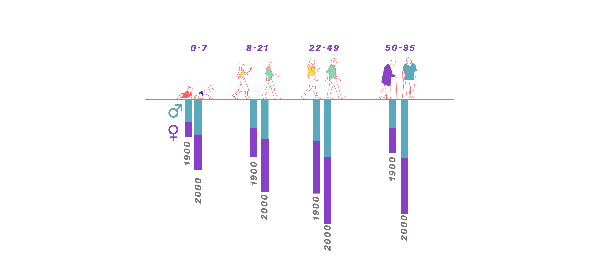

Here, I was mostly interested in discovering the data and the keywords in a visual, abstract manner. I like the idea of holding a brush with only some words but no numbers just yet. Then, I looked closely at the data and found some interesting correlations.
In the span of a century, the U.S. population has mirrored the journey of societal and life expectancy shifts. From 1900 to 2000, the number of children aged 0-15 years grew from 33.7 million to 80.2 million, while the elderly population aged 60-95 years expanded from about 5 million to over 46 million, with a notable predominance of women in the latter year. This demographic evolution reflects not just advancements in healthcare but also broader social changes, including gender dynamics and the redefinition of life stages. Through these numbers, we witness the unfolding story of a society that is simultaneously aging and transforming, challenging traditional roles and extending the narrative of human life.
Each group is split by gender for the years 1900 and 2000, depicted by color-coded bars—presumably blue for males and pink for females. The lengths of the bars represent population counts or proportions within each group. From left to right, the chart showcases the following: A decrease in the proportion of younger age groups (0-7, 8-21 years) from 1900 to 2000. An increase in the proportion of middle-aged adults (22-49 years) in 2000 compared to 1900. A significant increase in the proportion of the older age group (50-95 years) in 2000, especially notable in the female population. This visual suggests dramatic shifts in population dynamics over a century, with a decreasing youth population and a rising elderly population, especially among women. It encapsulates the demographic transition of an aging society with increasing life expectancy and changing societal structures.